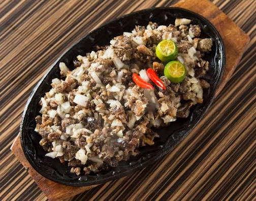
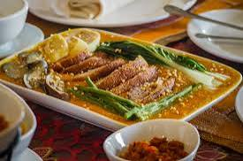
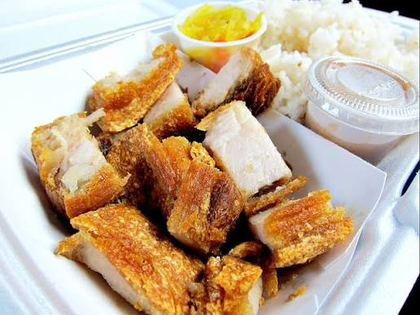

Kapampangan-Inspired Cuisine
Tarlac shares deep cultural and geographical bonds with Pampanga – the “Culinary Capital of the Philippines” – and this influence shines through in many of the province’s beloved dishes. While staying true to Kapampangan roots, Tarlac cooks have added their own subtle twists to create unique versions of classic favorites.
Featured Kapampangan-Inspired Dishes
-

Kapampangan-Style Sisig -

Tarlac Kare-Kare -

Lechon Kawali
About These Dishes
- Kapampangan-Style Sisig: Brought to Tarlac by Kapampangan settlers, this version uses pork cheeks, ears, and liver seasoned with garlic, onions, and chili peppers, then grilled over open flames before being sizzled on a hot plate. Tarlac’s take adds a hint of local palm vinegar for extra tang.
- Tarlac Kare-Kare: A rich stew made with oxtail, vegetables, and a thick peanut sauce – a staple of Kapampangan cuisine. Tarlac’s version often includes locally grown eggplant and string beans, and is served with a side of homemade bagoong (shrimp paste) seasoned with salt from Tarlac’s coastal areas.
- Lechon Kawali: Crispy deep-fried pork belly that’s a favorite at family dinners and celebrations. Tarlac cooks marinate the pork in a mix of garlic, soy sauce, and bay leaves (grown in backyard gardens) before frying to golden perfection – typically served with pickled green mangoes or homemade atchara.
- Sizzling Pork Belly with Shrimp Paste: A Kapampangan classic adapted in Tarlac, where thin slices of pork belly are grilled and served sizzling with a dollop of spicy bagoong and fresh calamansi – perfect with steamed rice.
Where to Find These Dishes
- El Kapampangan Restaurant (Luisita Estate): Serves authentic Kapampangan-inspired dishes using fresh ingredients from the estate’s farms – their kare-kare is a must-try.
- Mama Linda’s Carinderia (Concepcion): A small eatery run by a Kapampangan-Tarlac family, known for crispy lechon kawali and sisig.
- San Miguel District Market (Tarlac City): Look for stalls selling homemade kare-kare and bagoong – many vendors here have Kapampangan heritage.
- Event Caterers (Various Towns): Kapampangan-inspired dishes are a staple at Tarlac weddings and fiestas – ask about caterers specializing in these classics.
Cultural Connection Between Tarlac & Pampanga
- Historical Ties: Many areas in southern Tarlac were once part of Pampanga, leading to intermarriage and shared traditions – including food.
- Culinary Exchange: Tarlac farmers supply fresh produce to Pampanga restaurants, while Kapampangan chefs bring their skills to Tarlac, creating a continuous exchange of flavors.
- Family Traditions: Most Tarlac families have at least one recipe passed down from Kapampangan relatives, making these dishes a part of everyday life.